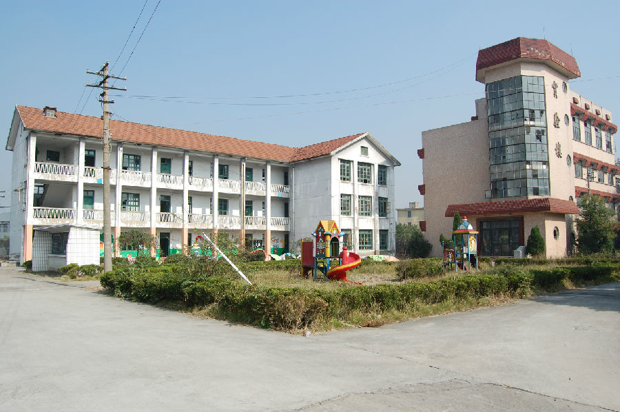

嘉兴市文物保护网 · 市级文物保护点 · 2020-11-06 · 原文

新塍中学教学楼位于嘉兴市秀洲区新塍镇虹桥社区东北大街46号，据《新塍镇志》记载和整理：民国二十八年（1939年），新塍镇人屠秉炘等人利用暑假筹设私立新塍初中暑期补习班，为新塍中等教育设置之始。此后几经换址和更名，1961年改名为嘉兴县新塍中学，1966年，“文化大革命”开始，改为红旗中学，1973年，又恢复新塍中学校名。1984年下半年起，新塍中学被列为全省重点中学之一。2004年新塍中学与新丰中学合并为嘉兴四中。据学校工作人员介绍该幢教学楼建于1963～1964年，坐北朝南，砖混结构，整体呈“L”形，占地面积为491.55平方米，为三层楼房，每层有四间教室，东、西两端有楼梯。教学楼现为新小学前班使用，其西侧原有一幢与其形制完全相同的教学楼，现已被拆除。新塍中学历史悠久，曾在本地区较有影响力，其教学楼保存较好，具有一定的历史价值。2009年公布为嘉兴市文物保护点。